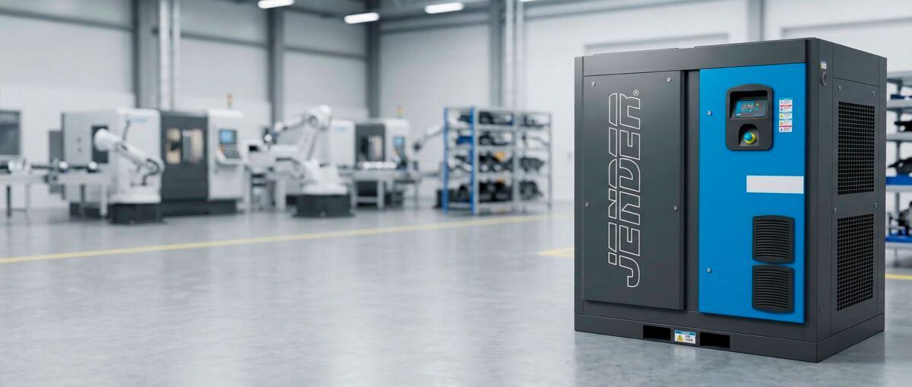
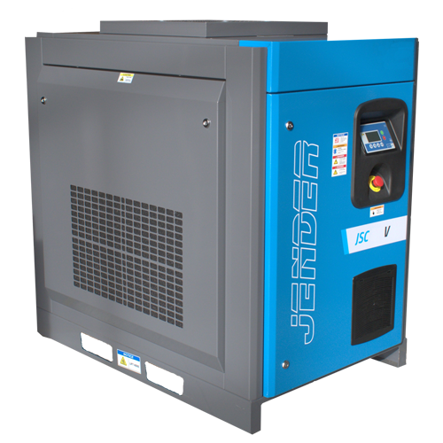
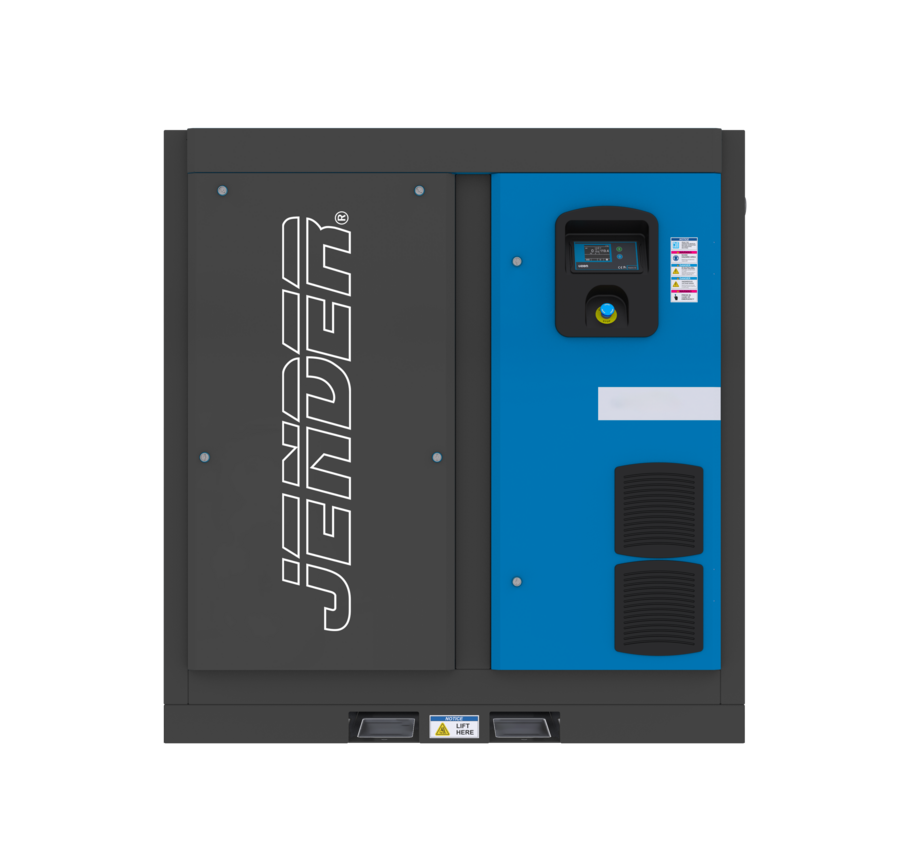
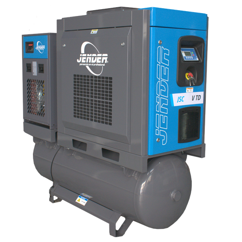

Compresores de aire
Dos tecnologías según cómo trabaje tu instalación: tornillo para producción continua con demanda estable, y pistón para trabajo intermitente en taller. La serie JSC cubre de 3 a 315 kW con variador de frecuencia de serie.

3 a 315 kWCompresores de tornillo
Serie JSCAire comprimido estable para producción continua, turno tras turno.

3–45 kWCon variador
Serie VVariador de frecuencia de serie, para instalaciones con demanda variable.

18,5–315 kWCon variador directo
Serie VDAcoplamiento directo motor-elemento compresor: sin correas ni pérdidas mecánicas.

3–15 kWCon variador y secador
Serie VTDCompresor, calderín y secador en un solo bastidor: la sala de aire resuelta.
 2–10 HP
2–10 HPCompresores de pistón
Hasta 10 CVDiez configuraciones, de la herramienta suelta a la línea con varias tomas.